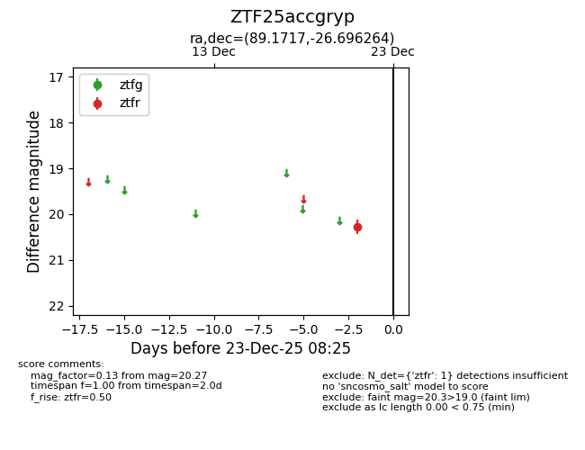
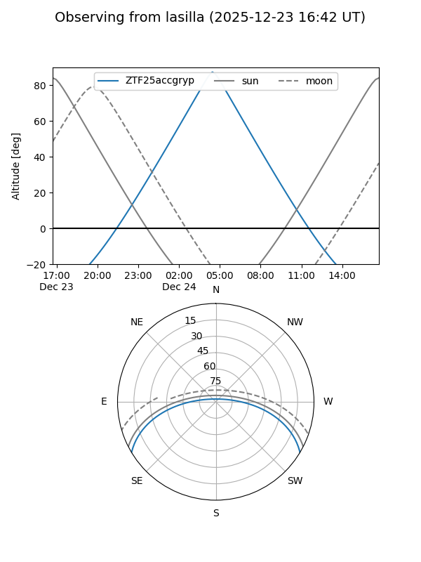
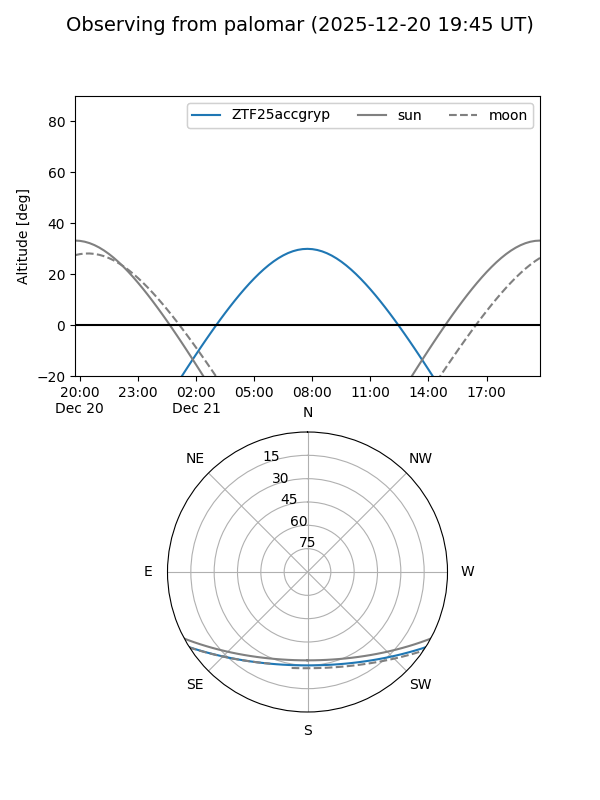

ZTF25accgryp
Target ZTF25accgryp at 2025-12-23 08:27
Aliases and brokers:
FINK: fink-portal.org/ZTF25accgryp
Lasair: lasair-ztf.lsst.ac.uk/objects/ZTF25accgryp
ALeRCE: alerce.online/object/ZTF25accgryp
alt names
ZTF25accgryp (ztf,fink_ztf)
Coordinates:
equatorial (ra, dec) = 89.1717,-26.69626
equatorial (HMS+DMS) = 05:56:41.21,-26:41:46.55
galactic (l, b) = (232.2002,-23.14158)
Flags:
Photometry:
last ztfr=20.27
1 ztfr detections
Lightcurve

Visibility


Additional plots